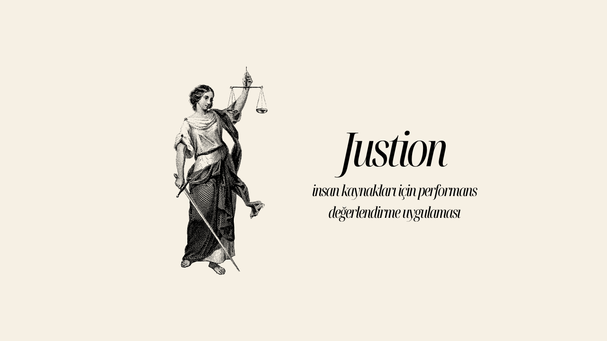

Performans kararları öznel kalabiliyor
İnsan kaynakları süreçlerinde metin yorumları, puanlar ve ekip ilişkileri birlikte değerlendirilmediğinde karar kalitesi düşer.
İnsan kaynakları süreçlerinde metin yorumları, puanlar ve ekip ilişkileri birlikte değerlendirilmediğinde karar kalitesi düşer.
Çalışan ilişkileri graf modeliyle okunurken yorumlar NLP ile analiz edildi; SHAP benzeri açıklanabilirlik yaklaşımıyla kararların nedeni görünür kılındı.
Performans değerlendirmelerini sadece skor değil, bağlam, ilişki ağı ve açıklanabilir sinyaller üzerinden inceleyen bir platform ortaya çıktı.

Özet: Modern organizasyonlarda geleneksel performans değerlendirme yöntemleri; öznellik, bilişsel önyargılar ve departmanlar arası tutarsızlık gibi kritik sorunlarla karşı karşıyadır. Justion projesi, bu zorlukları aşmak için makine öğrenmesi, graf teorisi, Doğal Dil İşleme (NLP) ve optimizasyon tekniklerini entegre eden kapsamlı bir karar destek sistemi sunmaktadır.
Sistem, açıklanabilir yapay zeka (XAI) ile kararların gerekçelerini sunmakta, sosyal ağ analizi ile çalışanlar arasındaki danışıklı dövüş (collusion) yapılarını tespit etmekte ve "İşlemsel Adalet" ilkeleri çerçevesinde şeffaf bir değerlendirme süreci yürütmektedir.